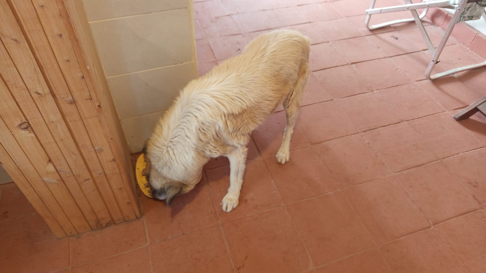
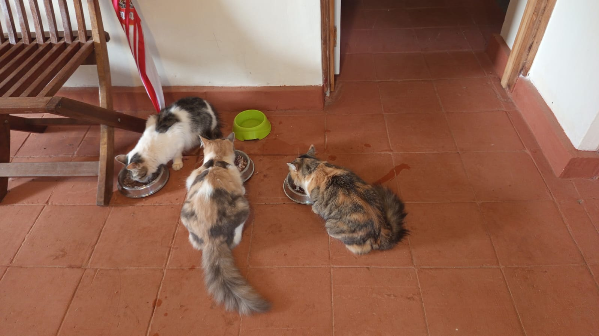

Mucheru World of Golf
Field civil engineering, agronomy earthwork, sub-surface drainage laying, reservoir anchor trench compaction, palm tree planting preparations, and teebox platform grading at Mucheru World of Golf on Thursday, 12th November 2026 under the supervision of Mr. Gichuhi and Ken:
Golf Course Operational Highlights
Course engineering and agronomy teams delivered coordinated progress across drainage lines, putting surfaces, teebox platforms, and water storage. Ground crews leveled trenches, assembled orange PVC drainage pipe runs, and backfilled lines at Green 1 to guarantee positive gravity outflow toward Dam 1. Agronomy laborers loosened compacted red soil, spread, and graded smooth apron surrounds encircling Greens 10 and 11, creating uniform collars flush with the sand putting surfaces. Teebox launch platforms at Teeboxes 1, 2, and 3 were leveled and smoothed following red soil loosening. Along Dam 2, laborers filled and compacted soil along the perimeter anchor trench where uncompacted backfill had caused liner dents, restoring a clean embankment grade. Ground staff dug structured planting holes along the boundary fence for palm trees, while continuous water inflow replenished Dams 1, 2, and 3, and selective hand-weeding continued across Green 5 turf.
- Green 1 Sub-Surface Drainage Trenching, Pipe Laying & Backfilling: Ground crew leveled trench invert, laid orange PVC drainage pipe runs, and commenced backfilling to ensure smooth gravity water flow toward Dam 1.
- Putting Green Apron Loosening & Shaping (Greens 10 & 11): Agronomy laborers loosened compacted red soil, graded, and leveled broad apron collars encircling the sand beds of Greens 10 and 11 in readiness for turfing.
- Championship Teebox Platform Surface Leveling (Tees 1, 2 & 3): Field teams smoothed, raked, and leveled loosened rich red soil across the playing platforms of Teeboxes 1, 2, and 3 to establish uniform playing grades.
- Dam 2 Liner Edge Dent Filling & Soil Compaction: Laborers backfilled and compacted soil along the perimeter anchor trench of Dam 2, eliminating surface dents where the geomembrane liner is tucked.
- Boundary Fence Palm Tree Hole Excavation: Ground staff excavated structured planting pits along the wire boundary fence line in preparation for planting decorative palm trees.
- Continuous Water Inflow & Green 5 Hand-Weeding: Active water replenishment continued across Dams 1, 2, and 3, while a dedicated worker performed selective hand-weeding across Green 5 turf.
Field video recording documenting Thursday, 12th November 2026 operations at Mucheru World of Golf:
Field video recording capturing daily course civil works, drainage pipe leveling and backfilling, apron shaping, teebox leveling, and dam water replenishment at Mucheru World of Golf on Thursday, 12th November 2026.
18-hole putting green status audit tracking sub-surface drainage, river sand rootzone layering, red soil apron shaping, and turf readiness as of November 12, 2026:
| Green | Current Technical & Agronomic State | Milestone Status |
|---|---|---|
| Green 1 Today | Drainage trench leveled, PVC pipes laid, and backfilling ongoing (Nov 12). | Drainage & Backfilling |
| Green 2 | Pop-up sprinklers operational with pressurized spray coverage actively watering green (Oct 28). | Pop-Ups Functional |
| Green 3 | Apron red soil loosened, leveled, and shaped in readiness for grass planting (Nov 8). | Apron Leveled & Shaped |
| Green 4 | Apron red soil loosened, leveled, and shaped in readiness for grass planting (Nov 8). | Apron Leveled & Shaped |
| Green 5 Today | Selective hand-weeding continued across green turf by dedicated worker (Nov 12). | Turf Weeding Ongoing |
| Green 6 | Drainage system pipes installed and leveled to ensure smooth gravity water flow to Dam 1 (Nov 11). | Drainage Installed |
| Green 7 | Red soil apron loosened and leveled around green in readiness for grass planting (Nov 9). | Apron Loosened & Leveled |
| Green 8 | Apron red soil loosened, leveled, and shaped in readiness for grass planting (Nov 8). | Apron Leveled & Shaped |
| Green 9 | River sand hauled from stockpiles to Greens 12 and 16 for rootzone layering (Oct 29). | River Sand Hauled |
| Green 10 Today | Apron red soil loosened and leveled around green in readiness for planting (Nov 12). | Apron Loosened & Leveled |
| Green 11 Today | Apron red soil loosened and leveled around green in readiness for planting (Nov 12). | Apron Loosened & Leveled |
| Green 12 | Apron red soil loosened and leveled around green in readiness for grass planting (Nov 11). | Apron Loosened & Leveled |
| Green 13 | Apron red soil loosened, leveled, and shaped in readiness for grass planting (Nov 10). | Apron Leveled & Shaped |
| Green 14 | Apron red soil loosened, leveled, and shaped in readiness for grass planting (Nov 10). | Apron Leveled & Shaped |
| Green 15 | Red soil apron loosened and leveled around green in readiness for grass planting (Nov 9). | Apron Loosened & Leveled |
| Green 16 | Red soil apron loosened and leveled around green in readiness for grass planting (Nov 9). | Apron Loosened & Leveled |
| Green 17 | Apron red soil loosened, leveled, and shaped in readiness for grass planting (Nov 10). | Apron Leveled & Shaped |
| Green 18 | River sand applied to unapplied segments and leveled across putting green bed (Nov 5). | River Sand Applied |
18-hole championship teebox status audit tracking launch platform shaping, red soil leveling, and planting readiness as of November 12, 2026:
| Teebox | Current Technical & Earthwork State | Platform Status |
|---|---|---|
| Tee 1 Today | Platform surface red soil leveled and smoothed after loosening in readiness for planting (Nov 12). | Red Soil Leveled |
| Tee 2 Today | Platform surface red soil leveled and smoothed after loosening in readiness for planting (Nov 12). | Red Soil Leveled |
| Tee 3 Today | Platform surface red soil leveled and smoothed after loosening in readiness for planting (Nov 12). | Red Soil Leveled |
| Tee 4 | Plumber completed maintenance and repairs on electric irrigation solenoid valve (Nov 10). | Solenoid Repaired |
| Tee 5 | Big drainage trench near teebox leveled and shaped for proper gravity water flow (Nov 6). | Trench Leveled & Shaped |
| Tee 6 | Unwanted rocks, stones, and surface debris cleared around teebox platform (Nov 6). | Rocks & Debris Cleared |
| Tee 7 | Both teebox platforms raked smooth to clear tiny rocks and pebbles in readiness for planting (Nov 7). | Raked for Planting |
| Tee 8 | Unwanted rocks, stones, and surface debris cleared around teebox platform (Nov 6). | Rocks & Debris Cleared |
| Tee 9 | Surplus red soil hauled to Teebox 7 for platform shaping and surface leveling (Oct 29). | Red Soil Hauled |
| Tee 10 | Platform surface red soil leveled and smoothed after loosening in readiness for planting (Nov 11). | Red Soil Leveled |
| Tee 11 | Platform surface red soil leveled and smoothed after loosening in readiness for planting (Nov 10). | Red Soil Leveled |
| Tee 12 | Platform surface red soil leveled and smoothed after loosening in readiness for planting (Nov 10). | Red Soil Leveled |
| Tee 13 | Surface leveling ongoing across platform following red soil loosening (Nov 9). | Leveling Ongoing |
| Tee 14 | Red soil loosened and platform leveled in readiness for grass planting (Nov 8). | Red Soil Leveled |
| Tee 15 | Red soil loosened and platform leveled in readiness for grass planting (Nov 8). | Red Soil Leveled |
| Tee 16 | Unwanted rocks, stones, and surface debris cleared around teebox platform (Nov 6). | Rocks & Debris Cleared |
| Tee 17 | Pop-up sprinkler heights checked and adjusted flush below teebox platform level (Nov 2). | Sprinkler Height Adjusted |
| Tee 18 | Irrigation pipe trenches excavated across platform along marked survey lines (Oct 26). | Pipe Trenches Dug |
Course-Wide Agronomy & Engineering Synthesis
Course Agronomy & Earthwork Milestones: Sub-surface PVC drainage pipes were leveled, laid, and backfilled at Green 1 to secure gravity discharge toward Dam 1; red soil aprons were loosened, spread, and leveled encircling Greens 10 and 11 in readiness for planting; field teams smoothed and leveled loosened red soil across playing platforms on Teeboxes 1, 2, and 3; structured holes were dug along the boundary fence for palm trees; and selective hand-weeding continued on Green 5 turf.
Hydraulic & Water Management: Freshwater replenishment remained active across all course reservoirs (Dams 1, 2, and 3) while laborers backfilled and compacted soil along the perimeter anchor trench of Dam 2, permanently eliminating surface dents where the liner is tucked.
Sequential photographic field documentation showing Dam 1, Dam 2, and Dam 3 continuous water replenishment, Dam 2 anchor trench dent filling and compaction, Green 1 drainage pipe leveling and laying, red soil apron loosening and leveling on Greens 10 and 11, Teebox 2 and 3 platform grading, palm tree hole digging, and Green 5 selective turf weeding on Thursday, 12th November 2026:

Dam 1 — Aerial Perspective of Water Storage Basin
Aerial drone view of Dam 1 reservoir lined with black geomembrane, holding water with surrounding green fairways and access road.

Dam 1 — Continuous Freshwater Replenishment Inflow
Ground perspective of Dam 1 showing clean freshwater accumulating across the geomembrane lined reservoir bed under continuous gravity inflow.

Dam 2 — Aerial Overview of Reservoir Basin & Island
Aerial drone view of Dam 2 reservoir showing rising water levels encircling the central vegetated island and perimeter anchor embankments.

Dam 2 — Water Accumulation Surrounding Central Island
Ground-level view of Dam 2 lined reservoir showing clean water accumulating around the central island from the active gravity inflow pipeline.

Dam 3 — Serpentine Storage Reservoir Water Level
Aerial drone perspective of serpentine Dam 3 filled with clean freshwater reflecting the sky, flanked by adjoining course playing corridors.

Dam 2 — Filling & Compacting Liner Anchor Trench Dents
Laborers using shovels and foot pressure to backfill and compact loose soil along the Dam 2 embankment, eliminating dents where the liner is tucked.

Green 1 Drainage — Pipe Trench Leveling & Laying
Workers in the trench using shovels to establish uniform fall gradients and install orange PVC drainage pipe runs at Green 1.

Green 1 Drainage — Continuous Pipe Assembly & Alignment
Ground crew aligning continuous orange PVC drainage pipe runs in the trench beside the red soil apron to ensure gravity water discharge toward Dam 1.

Green 10 — Aerial Perspective of Sand Bed & Red Soil Apron
High-angle aerial drone view of Green 10 displaying the kidney-shaped river sand putting bed bordered by the freshly graded red soil apron.

Green 10 Apron — Red Soil Loosening & Grade Shaping
Ground view of Green 10 showing the broad perimeter collar of rich red soil loosened, spread, and leveled flush with the sand putting surface.

Green 10 Apron — Perimeter Collar Grading for Planting
Wide ground perspective across Green 10 showing laborers shaping and smoothing the loosened red soil apron collar in readiness for turf establishment.

Green 11 — Aerial View of Red Soil Apron Earthwork
Aerial drone view of Green 11 showing ground crews actively raking, shaping, and leveling the red soil apron encircling the central sand bed.

Green 11 Apron — Ground Laborers Leveling Red Soil
Ground crew of eight laborers using shovels, rakes, and a wheelbarrow to loosen, spread, and level the red soil apron surrounding Green 11.

Teebox 2 — Platform Surface Leveling After Loosening
Two laborers using rakes and hoes to smoothly level rich red soil across the elevated playing platform of Teebox 2 after soil loosening.

Teebox 3 — Aerial View of Playing Platform Leveling
Aerial drone perspective of Teebox 3 showing workers smoothly grading loosened red soil across the rectangular launch platform nestled between trees.

Course Landscaping — Digging Palm Tree Planting Holes
Workers using hand digging tools to excavate structured planting holes along the wire boundary fence line in preparation for palm tree planting.

Green 5 — Selective Turf Hand-Weeding Routine
Dedicated worker hand-weeding invasive weeds across the established green turf of Green 5 into a collection bucket to preserve grass purity.
Chaka Farms
Commercial dairy production, veterinary medical administration, compound lawn maintenance, pathway hand-weeding, and canine behavioral conditioning at Chaka Farms on Thursday, 12th November 2026:
Farm Operational Highlights
Dairy production logged by Kamandau yielded 14.0 Litres gross harvest (8.0L morning + 6.0L evening), 100% accounted for and dispatched directly to commercial milk sales with zero discrepancy. Ken oversaw prompt veterinary medical care for Kaparo's cow calf, which presented with a bloated stomach; medication was successfully administered to relieve bloating and stabilize the animal. Groundsmen operated motorized brush-cutters across the compound, trimming expansive lawn corridors and borders around ornamental hedges. Margaret and Monica performed thorough hand-weeding along concrete stepping slab walkways through the compound. Willy directed morning kennel hygiene washing, paw command drills, off-leash walking, socialization sessions with Zara, Mali, and Bella, and structured kennel manners conditioning.
- 100% Commercial Dispatch of 14.0 Litre Dairy Harvest: Morning (8.0L) and evening (6.0L) milking produced 14.0 Litres gross harvest, 100% accounted for and dispatched for commercial sales with zero numerical discrepancy.
- Veterinary Treatment Administered to Kaparo's Calf: Ken monitored Kaparo's cow calf showing stomach bloat, successfully administering medication to relieve symptoms and restore digestive comfort.
- Motorized Compound Lawn Trimming: Groundsmen operated brush-cutters across compound lawns and around decorative hedges to keep grass neatly manicured and pristine.
- Compound Paved Pathway Border Weeding: Margaret and Monica thoroughly hand-weeded along concrete stepping slab walkways and garden paths through the compound lawn.
- Kennel Stall Sanitation & Paw Command Drills: Willy completed thorough morning washing across all dog kennel stalls and conducted responsive paw command drills.
- Canine Socialization, Off-Leash Walking & Manners Conditioning: Supervised social interaction with Zara, Mali, and Bella, followed by off-leash exercise and structured kennel manners drills.
Official milking production and distribution ledger for Thursday, 12th November 2026, recording gross yields, commercial dispatches, and internal farm allocations:
| Session / Disbursement Channel | Morning Yield | Evening Yield | Daily Total |
|---|---|---|---|
| Commercial Milk Sales (Dispatched) | 8.0 Litres | 6.0 Litres | 14.0 Litres |
| Internal Farm Allocations | 0.0 Litres | 0.0 Litres | 0.0 Litres |
| Total Volume Accounted For | 8.0 Litres | 6.0 Litres | 14.0 Litres (100% Reconciled) |
Dairy Accounting & Farm Reconciliation Note
Total gross cow milk harvested of 14.0 Litres (8.0L morning + 6.0L evening) was 100% accounted for and dispatched directly for commercial sales (8.0L morning sale + 6.0L evening sale) with zero internal disbursements allocated today. In compliance with project standards, all milk figures are strictly measured and displayed in Litres (never Kilograms), achieving 100% volume reconciliation with zero numerical discrepancy.
Kennel sanitation, behavioral conditioning drills, off-leash exercise, calf bloat veterinary care, and compound lawn maintenance on Thursday, 12th November 2026:
Field video recording capturing structured kennel manners training, crate threshold patience, and calm handler engagement at Chaka Farms on Thursday, 12th November 2026.
- Kennel Stall Sanitation & Stall Washing: Willy directed thorough morning washing and sanitizing across all dog kennel stalls to uphold pristine hygiene.
- Paw Command Training Drills: Handlers conducted focused, responsive paw command drills reinforcing handler obedience and focus.
- Supervised Canine Socialization (Zara, Mali & Bella): Structured social interaction sessions were conducted with Zara, Mali, and Bella to build confidence and friendly temperament.
- Off-Leash Walking Sessions & Exercise: Willy observed and conducted off-leash walking and exercise routines across designated farm corridors.
- Kennel Manners Conditioning: Handlers reinforced crate threshold patience, calm waiting, and controlled kennel entry and exit routines.
- Kaparo Calf Veterinary Care & Medical Administration: Ken monitored Kaparo's cow calf exhibiting stomach bloat, successfully administering medication to relieve symptoms.
- Compound Grounds Trimming & Pathway Weeding: Groundsmen operated brush-cutters to trim compound lawns while Margaret and Monica weeded along concrete slab stepping pathways.
Photographic field evidence documenting motorized compound grass trimming, manicured estate lawns, and stepping slab pathway weeding on Thursday, 12th November 2026:

Compound Maintenance — Motorized Lawn Grass Trimming
Groundsman in green overalls operating a motorized brush-cutter trimming lawn grass adjacent to the yellow hedge and residential building.

Estate Grounds — Manicured Lawn & Flowering Borders
View of the manicured estate lawn featuring flowering agapanthus beds, stepping stones, and mature acacia shade trees.

Estate Grounds — Trimmed Grass Corridors Under Tree Canopy
Expansive compound lawns beneath acacia trees neatly trimmed and maintained to preserve an immaculate parkland setting.

Compound Care — Weeding Concrete Stepping Slab Pathways
Ground workers hand-weeding soil borders along the concrete stepping slab pathway traversing the manicured compound lawn.
Kabete Residence
Domestic pet care and evening feeding routines at Kabete Residence on Thursday, 12th November 2026:
Residence Operational Highlights
Domestic pet nutrition and wellness routines progressed smoothly at Kabete Residence under the attentive care of Njoki. Ajabu the Golden Retriever enjoyed his wholesome, balanced evening dinner served on his dedicated dish on the terracotta floor indoors. All three resident cats—Reo, Mocha, and Aiko—gathered together indoors, dining peacefully from their individual stainless-steel food bowls beside their water station.
- Domestic Pet Feeding Oversight: Njoki oversaw indoor evening meal routines, ensuring all resident animals received proper nutrition.
- Ajabu the Golden Retriever Evening Dinner: Ajabu enjoyed his fresh, balanced evening meal served on his dish indoors on the terracotta tile floor.
- Resident Cats Evening Dining (Reo, Mocha & Aiko): All three resident cats dined peacefully together indoors from individual stainless-steel bowls.
- Quiet Indoor Animal Comfort: All pets were accommodated indoors in a clean, calm, and comfortable setting.
- Clean Feeding Station Maintenance: Feeding areas and food bowls were cleaned and properly maintained following mealtime.
Photographic field documentation showing domestic pet feeding routines for Ajabu the Golden Retriever and resident cats Reo, Mocha, and Aiko on Thursday, 12th November 2026:

Domestic Pet Care — Ajabu Evening Dinner Indoors
Ajabu the Golden Retriever enjoying his evening meal served on his plate on the terracotta tile floor indoors.

Domestic Pet Care — Resident Cats Dining Indoors
Resident cats Reo, Mocha, and Aiko eating their evening meals together indoors from individual stainless-steel bowls on the terracotta floor.
Amani Cottage
Compound grounds sanitation, upstairs interior housekeeping, exterior drainage ground raising, balcony pole timber peeling, wall scraping, skimming coat application, and utility water monitoring at Amani Cottage, GRVL on Thursday, 12th November 2026 under the supervision of Edwin:
Cottage Operational Highlights
Grounds maintenance, interior housekeeping, and essential property repairs advanced at Amani Cottage under Edwin's oversight. Compound grounds were swept and cleared of fallen litter, while upstairs living spaces received comprehensive dusting. An on-site fundi executed multiple structural maintenance tasks: raising the ground level around the exterior chimney base with hardcore stone and mortar to ensure proper runoff and eliminate water stagnation, peeling bark from timber poles on the front lawn in preparation for balcony pole replacements, scraping peeling and damaged wall plaster in Baraka's bedroom and along the staircase, and applying fresh skimming coat near the chimney junction. Utility tracking logged 7.2 m³ of water used over one week and two days.
- Compound Environmental Sweeping & Litter Clearance: Grounds personnel thoroughly swept paved walkways, outdoor corridors, and garden surrounds, collecting windblown litter.
- Upstairs Interior Housekeeping & Dusting: Staff dusted furniture, wooden wall paneling, and storage fixtures upstairs to maintain immaculate hospitality standards.
- Chimney Area Ground Leveling & Drainage Improvement: Fundi laid hardcore stones and wet mortar to raise the ground level around the chimney base, preventing water stagnation.
- Balcony Timber Pole Peeling & Replacement Prep: Craftsman peeled bark from timber poles on the front lawn in preparation for replacing worn-out balcony uprights.
- Wall Surface Scraping & Skimming Repair: Damaged and peeling paint/plaster was scraped from walls in Baraka's bedroom and along the staircase, with skimming coat applied near the chimney.
- Utility Water Consumption Tracking: Utility monitoring recorded 7.2 m³ of water consumed over a period of one week and two days via the Iberconta meter.
Photographic field documentation showing interior upstairs dusting, balcony timber pole peeling, chimney foundation mortar and stone raising, wall scraping in Baraka's bedroom and along stairs, skimming coat application, and water utility meter readings on Thursday, 12th November 2026:

Interior Housekeeping — Upstairs Dusting Near Outlets
Staff dusting and cleaning the dark wooden storage ledge and wood-paneled wall area near network adapters upstairs.
.jpeg)
Interior Housekeeping — Upstairs Wooden Bench Dusting
Detailed dusting and surface cleaning across the upstairs wooden storage bench and wall paneling beside the natural stone wall.
.jpeg)
Carpentry & Balcony — Peeling Bark from Timber Poles
Craftsman peeling bark from timber poles on the grass lawn in preparation for replacing worn-out structural posts at the front balcony.

Carpentry Preparation — Peeled Timber Balcony Poles
Four peeled structural timber poles prepared and staged neatly on the lawn beside garden tools in readiness for balcony fitting.

Drainage Remediation — Raising Ground Level at Chimney Base
Hardcore stones and wet cement mortar bed laid at the base of the exterior stone chimney to elevate the ground and stop water stagnation.
.jpeg)
Masonry Drainage Work — Mortar Application at Chimney
Fundi applying mortar over hardcore stone infill at the chimney base with cement bags staged in the background to ensure positive drainage runoff.
.jpeg)
Wall Finishing — Skimming Coat Near Chimney Area
Fundi applying smooth white skimming coat with a putty knife along the junction between the dark wooden ledge and wall paneling near the chimney.

Interior Wall Repairs — Scraping Peeling Wall in Baraka's Bedroom
Fundi using a scraper to remove peeling paint and damaged plaster along the lower wall border above the wooden skirting in Baraka's bedroom.

Stairway Maintenance — Scraping Damaged Wall Along Stairs
Fundi scraping damaged wall plaster along the staircase skirting beneath the wooden stairs to prepare the surface for refinishing.
.jpeg)
Wall Inspection — Damaged & Peeling Wall Surface Detail
Close-up inspection of damaged, blistering wall plaster along the wooden skirting board before scraping and restoration.

Utility Monitoring — Iberconta Water Meter Reading
Iberconta water utility meter documenting consumption of 7.2 m³ utilized over a duration of one week and two days at Amani Cottage.
.jpeg)
Utility Tracking — Water Flow & Meter Casing Inspection
Close-up view of the water meter assembly and dials verifying continuous monitoring of estate utility water consumption.